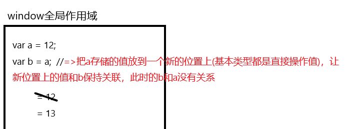
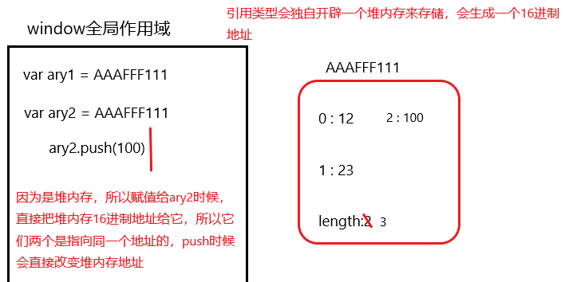

One minute
1000 - 变量提升、闭包
1.一般都把 js 放到 body 的末尾
a:为什么？
b:放在 head 中可以不可以？如何放到 head 中也可以实现出放到 body 末尾的效果？
c:script 标签中有两个属性：defer / async,这两个属性是做什么的？
2.js 数据渲染机制及堆栈内存
a:基本类型(因为数据简单，之间在全局作用域开辟一个地址存储)
<!--
1.变量提升(找var和函数(var开始定义是undefined、函数定义赋值是同时完成的))
-->
var a = 12;
var b = a;
b = 13;
console.log(a);

b:引用类型(因为数据复杂，所以会开辟一个堆内存来存储)
var ary1 = [12,23];
var ary2 = ary1;
ary2.push(100);
console.log(ary1);

A:栈内存:作用域
1.提供一个供 js 代码自上而下执行的环境(代码都是在栈内存中执行的)
2.由于基本数据类型比较简单，他们都是直接在栈内存中开辟一个位置，把值直接存进去的
=>当栈内存被销毁，存储的那些基本值也都跟着销毁了
B:堆内存:引用值对应的空间
1.存储引用类型值(对象:键值对 函数:代码字符串)
=>当前堆内存稀释被销毁，那么这个引用值彻底没了
=>堆内存的释放：当堆内存没有被任何变量或者其它东西所占用，浏览器会在空闲的时候，自主进行内存回收，把所有不被占用的堆内存销毁掉
=>xxx = null 通过空对象指针 null 可以让原始变量(或者其它东西)谁都不指向，那么原有被占用内存就没有被东西占用了，浏览器就会销毁它
63 Words
0001-01-01 08:00 +0800
Read other posts